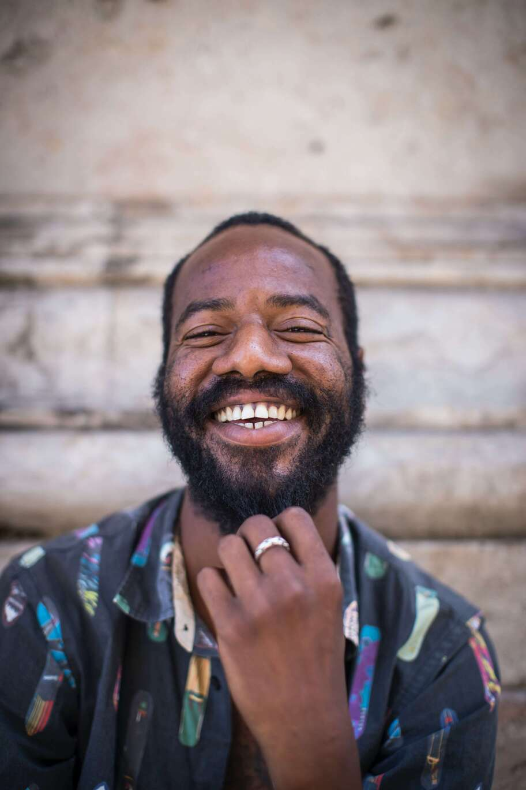

Site's Target Audience
Description
The target audience of this site will be both people that are interested in knowing more about the city and what it has to offer (wether it would be tourism or businesses) or entities or businesses wanting to invest in the city. Basically anyone with an interest in what the city has to offer in terms of helping businesses thrive.
Personas

Miguel Cuello
Occupation: Farmer
Group: Traveler
Age: 54
Reasons why he visited the page: As a retired farmer I like to travel to different places and find out where the residents of the place really live their lives. Finding the businesses and recommended spots by locals is not the same as following the directions of the hotel concierge. I want to be able to find what the locals do, where they eat and how they manage to enjoy their city on a budget.

Robin Sheppard
Occupation: Baker
Group: Investor
Age: 36
Reasons why he visited the page: Finding a good city with enough expecatives of economic growth is very important for me to finally find a place I want to settle my family in. Knowing who to call for questions and who can direct me in making sure I can create a business in the city is critical to accomplish my dream. I want to open a bakery in Saint Domingue and having a place where I can see what I'm really getting into and who has my back is the most important thing for me.
Scenarios
- Who do I contact if I have issues about a business?
- What is a place I have to go to in order to experience life in this city?
- What are the most cherished and celebrated restaurants in the city?
- What resources do I have available if I want to build a business in Saint Domingue?
- Who was the most transparent business of 2021 in the city?